Humans + agents
Built to be shared with your agents.
There's no API server to run and no plugin to install. The board is a directory of JSON files: you use the TUI, agents use the CLI, and tct reloads from disk every 15 seconds, so an agent's new card shows up on your screen.
tcttct cards …# read the task $ tct cards "Sprint" --show "caching" # plan it, then report progress $ tct checklist "Sprint" "caching" --add "Write tests" $ tct checklist "Sprint" "caching" --toggle 1 # record it in git (only .tct/ is committed) $ tct commit
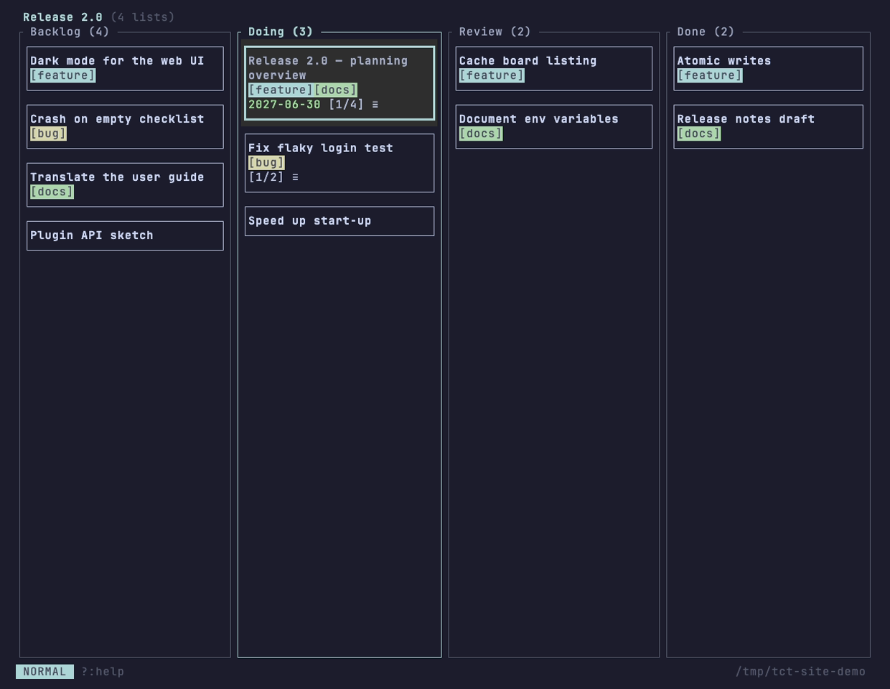
📖Self-documenting
tct --help user-guide --section … prints any part of the guide. An agent needs no outside docs.
🎯Forgiving & predictable
Partial, case-insensitive names; ambiguity lists candidates with IDs; --by-id for exact. Errors on stderr, exit status 1.
🔍Reviewable
Every card keeps a change history, and tct commit names the boards and cards touched. Nothing is committed in the background.
🛡️Safe by design
Control characters are stripped from output, IDs are validated and symlinks refused, even for a .tct/ from a cloned repo.
Tell your agent about tct
Add a few lines to AGENTS.md or CLAUDE.md:
Track work on the tct board in `.tct/` (run `tct --help user-guide --section "Humans and AI agents"` for how). Before starting, read your card with `tct cards <board> --show <card>`; tick checklist items as you go; run `tct commit` when you finish.
Details in the user guide.
In action
See what it can do.
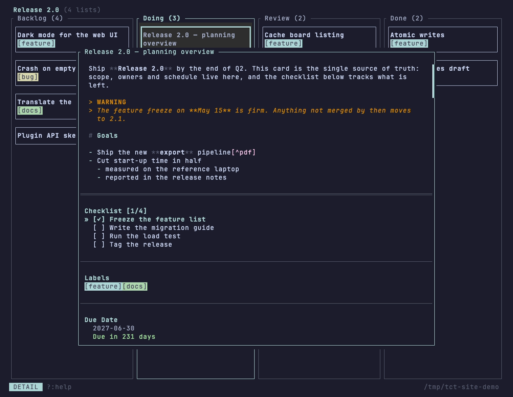
[!warning] get their own color.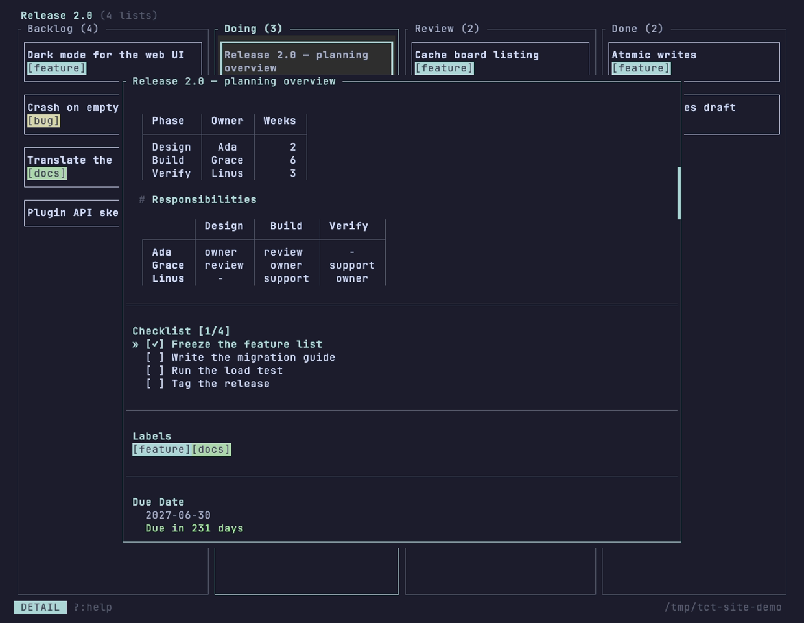
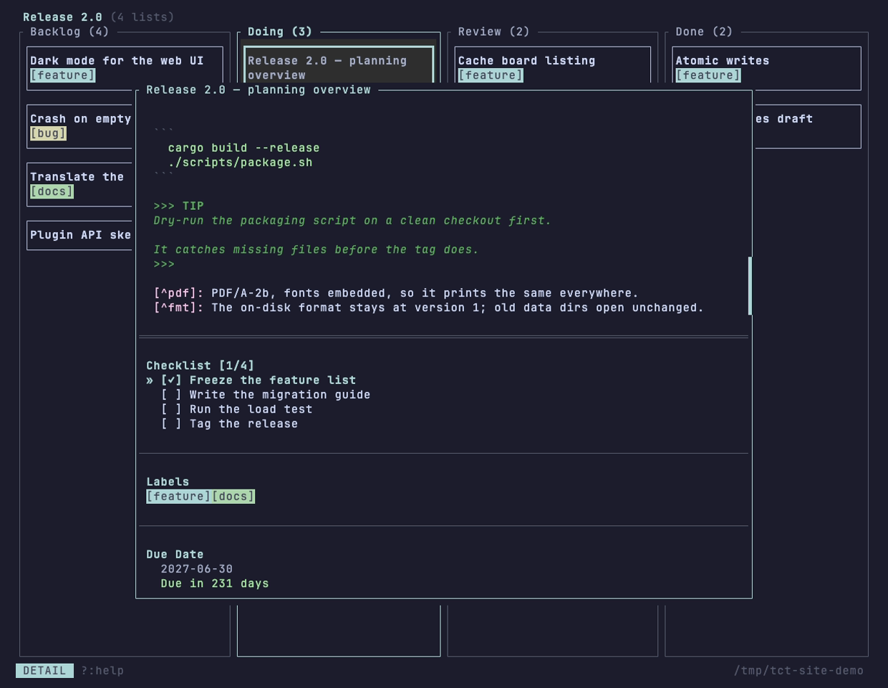
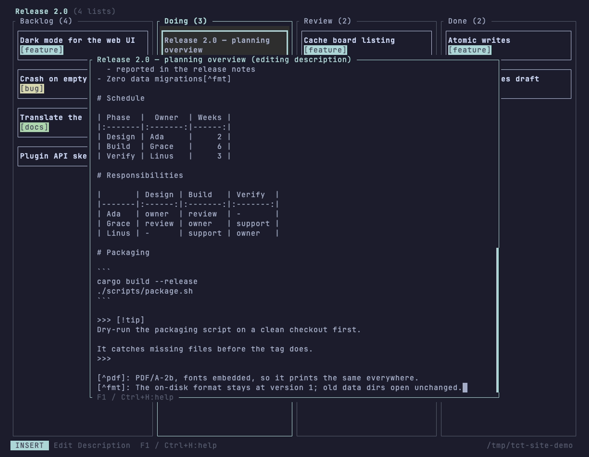
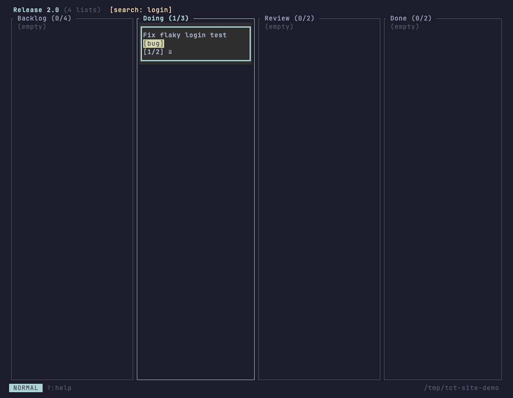
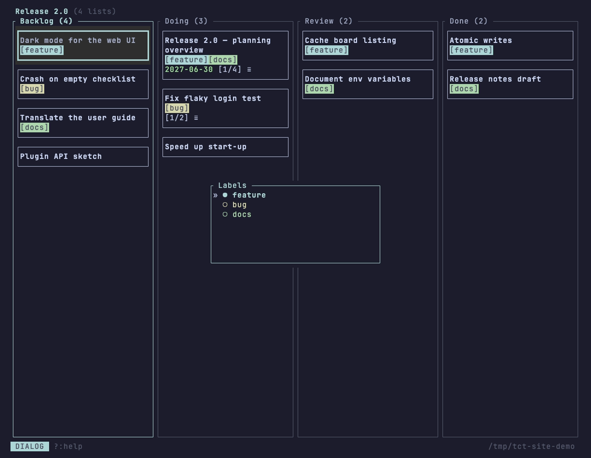
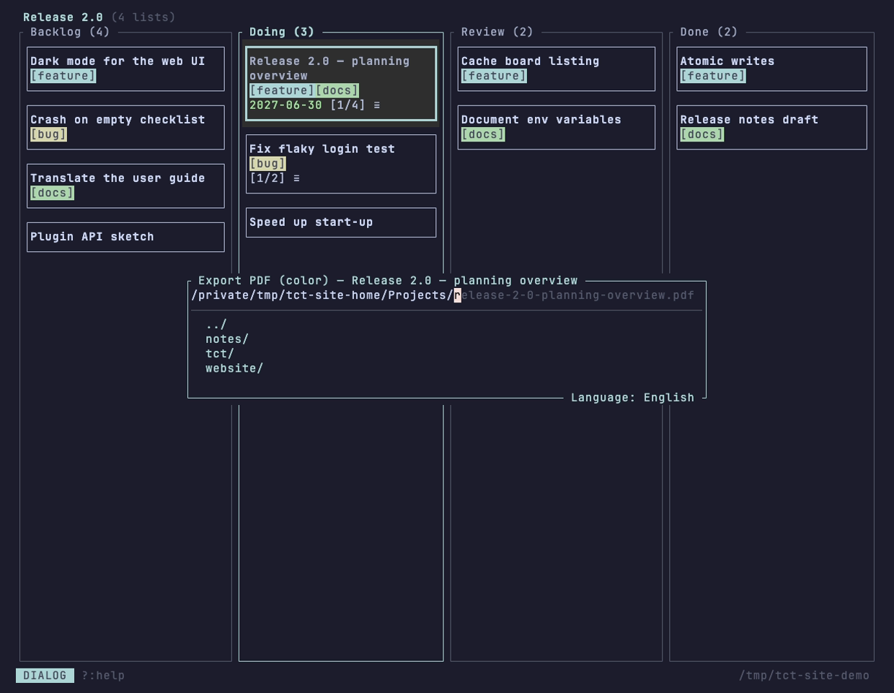
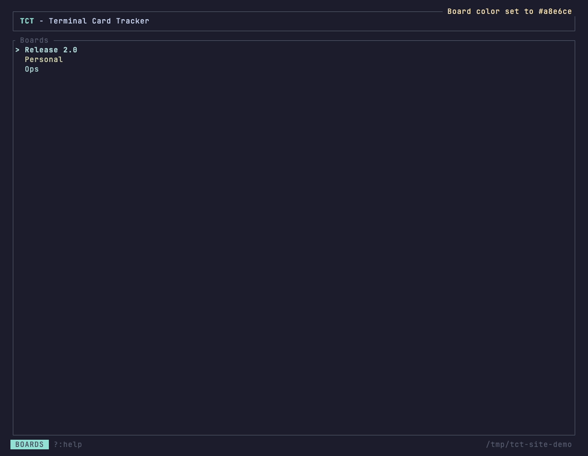
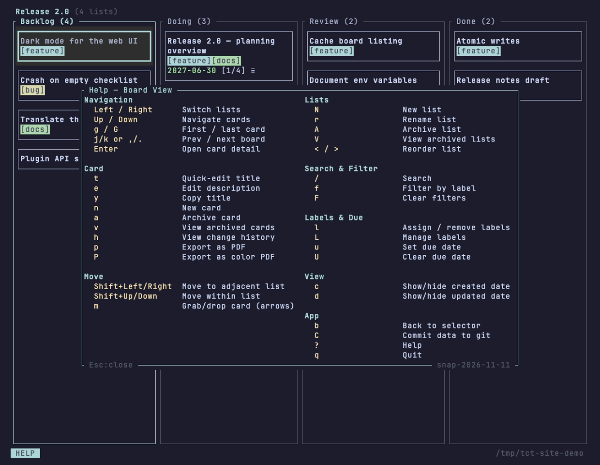
Why tct
Boards are just files.
Every board and every card is one human-readable JSON file. That single decision makes tct easy to sync, diff, script and trust.
📄Files are the API
Standalone, readable JSON. Any tool that can read and write files can work with your boards.
🔄Sync-friendly
One file per card, atomic writes, reload every 15 s. Different cards never conflict.
⌨️Keyboard-first
Every action is a keystroke. Modal input like Vim keeps bindings contextual and safe.
🤖Dual interface
A TUI for humans, a headless CLI for scripts and AI agents — same data, same files.
📦Zero infrastructure
A single binary. No database, no daemon, no network, no sign-up.
🖨️Print-ready
Export any card as a PDF/A — black and gray for monochrome printers, or in color.
Who it's for
One tool, three ways to work.
🧑💻Solo developers
Keep a board next to your code with tct init. No browser tab, no context switch.
👥Teams in a repo
Commit .tct/ and everyone who pulls sees the same board. Cards live in separate files, so merges stay boring.
🤖Scripts & AI agents
A complete CLI with partial-name matching and a user guide embedded in the binary: tct --help user-guide.
Under the hood
Open a card in any editor.
No proprietary format and no database. A board is a directory; a card is a file you can read, diff and grep.
.tct/
└── boards/
└── 9f3c3ae4/
├── board.json # name, lists, labels
├── card-53ad7911.json
└── card-a07e12c0.json{
"list_id": "24d6c0f0",
"position": 1.0,
"title": "Fix login bug",
"description": "Fails on **expired** tokens.",
"label_ids": ["df88cb04"],
"due_date": "2099-12-31",
"checklist": [ … ],
"archived": false
}A card knows its list and its rank, so moving a card rewrites one small file. A card's history (created, moved, archived, edited) is kept inside it.
Everything on a card
Small, sharp feature set.
Markdown descriptions
Highlighting, soft wrap, auto-continued lists, live-reformatted tables, footnotes, alerts and undo/redo.
Checklists
Add, edit, toggle, delete and reorder items; progress shows on the card, e.g. [2/3].
Labels
Board-wide labels with auto-generated pastel colors that stay maximally distinct. Filter by label with f.
Due dates
A calendar picker and clear overdue display in the list and the detail view.
Archive & history
Archive cards, lists and boards and restore them later. Every card keeps a change history (h).
Accent colors
Each board gets its own accent: cycle pastels with c or pick any color with C.
Any terminal
Truecolor where available, quantized to 256 or 16 colors elsewhere, with a fallback for the bare Linux console.
macOS friendly
Cmd shortcuts work in terminals that pass them through.
Install
Up and running in a minute.
brew install waschmittel/tct/tct
macOS (Apple Silicon) and Linux x86_64.
chmod +x tct mv tct /usr/local/bin/
Download from the releases page.
cargo install --path .
Needs a Rust toolchain.
Your first board
Run tct init in a project to keep boards next to your code in .tct/ (like git init). Without it, boards live in ~/.tct/.
# project-local boards $ tct init $ tct # open the board selector $ tct --board sprint # jump straight into a board
Tour
Four screens, one flow.
Pick a board
The selector lists your boards. n creates one, c cycles its accent color, a archives it.
Work the columns
Lists are columns of cards. Move around with the arrows, create cards with n, and push them along with Shift+arrows — within a list or across lists. On bare Linux consoles, m grabs a card and arrows move it.
Open a card
Description, checklist, labels and due date in one scrollable view. Toggle items with Space, set a due date with u, assign labels with l.
Write in Markdown
The editor highlights as you type, wraps softly, auto-continues lists, reformats pipe tables on every edit and supports footnotes, alerts and undo/redo.
Find things
/ searches and hides non-matching cards; f filters by label; F clears it all.
Forgot a key? ? opens a help overlay that is always specific to where you are (F1 in the editor).
Cheat sheet
The keys you'll use daily.
| Board view | |
|---|---|
| ← → ↑ ↓ | Move between lists and cards |
| Enter | Open card |
| n / N | New card / new list |
| Shift+arrows | Move card |
| t / e | Edit title / description |
| l / u | Labels / due date |
| a | Archive card |
| Everywhere | |
|---|---|
| / | Search |
| f / F | Filter by label / clear filters |
| p / P | Export PDF (mono / color) |
| h | Card history |
| C | Commit .tct/ to git |
| ? | Contextual help |
| q | Quit |
Command line
Everything the TUI does, scriptable.
Commands follow tct <entity> <board> --<action>. Names match case-insensitively and partially; use --by-id for exact IDs. Perfect for scripts, CI and AI agents.
# create a board with lists and cards $ tct boards --create "My Project" $ tct lists "My Project" --create "To Do" $ tct cards "My Project" --create "To Do" "Fix login bug" # flesh it out $ tct cards "My Project" --edit "Fix login" --due 2099-12-31 $ tct checklist "My Project" "Fix login" --add "Write a failing test" $ tct labels "My Project" --assign "Fix login" "bug" # review, search, export, commit $ tct cards "My Project" $ tct cards "My Project" --export "Fix login" --style color $ tct commit
Built-in docs
tct --help lists topics: cli, examples, env, readme, user-guide. The guide is embedded in the binary.
Safe output
Control characters in card titles are stripped before they reach your terminal.
Untrusted-repo safe
Validated IDs and no symlinks: a .tct/ from a cloned repo can't escape its directory.
Sync & git
Share boards without a server.
Put .tct/ in your repo and teammates see the board when they run tct there. One file per card means different cards never conflict, and tct reloads from disk every 15 seconds.
Prefer Dropbox, Syncthing or OneDrive? Point TCT_DATA_DIR at a synced folder.
tct --git enable commits on quit, C commits at once, and tct commit does it from scripts. Only .tct/ is ever committed, with a message naming the boards and cards that changed.
# share a board with your team $ tct init $ tct boards --create "Sprint Board" $ tct commit $ git push # teammates $ git pull && tct
PDF export
From card to paper.
Press p for a black-and-gray PDF/A made for monochrome printers, or P for color. Fonts are embedded, so it looks the same everywhere. Headings, lists, tables, code, footnotes and alerts are laid out with sensible page breaks.
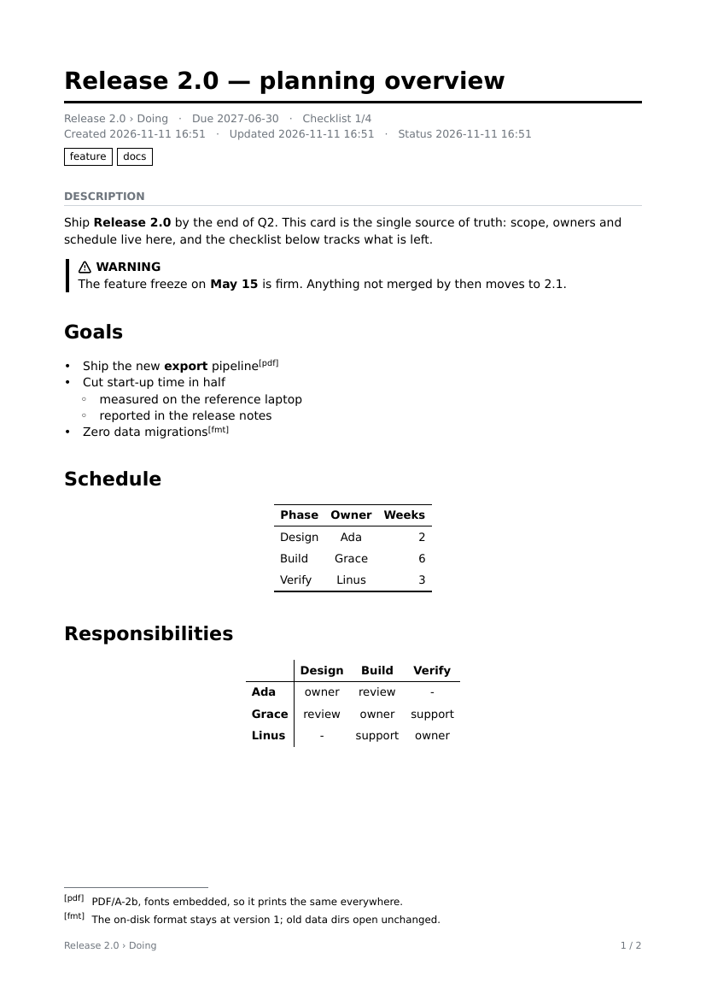
Same card, same text. The PDF adds proper typography, a running footer, and footnotes at the bottom of the page that cites them. Tables and matrices are drawn booktabs-style.
More samples: alerts · footnotes · matrix tables · kitchen-sink showcase. Or from the shell: tct cards "Release 2.0" --export "planning" --style color.
FAQ
Good to know.
Where does tct store my data?
TCT_DATA_DIR if set, else the nearest .tct/ in the current directory or a parent, else ~/.tct/.
Do I need git?
No. Git is optional and strictly opt-in; tct never commits in the background. Any file sync works.
Does tct talk to the network?
No. There is no server, telemetry or account. The optional browser version is something you host yourself.
What if two people edit the same card?
Writes are atomic and each card is its own file, so unrelated edits never clash. Concurrent edits to the same card are resolved by your sync tool as for any file.
I cloned a repo that contains a .tct/. Is that safe?
Yes: IDs are validated, symlinks are refused and terminal output is sanitized, so a malicious data directory can't read or write outside itself.
How does an AI agent learn to use tct?
From the binary itself: tct --help gives an overview and tct --help user-guide --toc plus --section print the guide piece by piece. Add the snippet from above to your agent instructions and it will find the rest.
Where is the full documentation?
In the binary: tct --help, then tct --help user-guide --toc. Also as a web page.
More
In the browser, and in depth.
Browser PWA
A Docker image serves tct as an installable web app, with Basic Auth or OAuth. Self-hosting guide
User guide
Every screen, label colors, archiving, data format, troubleshooting. Read the guide
Architecture
arc42 documentation and decision records. Explore the design